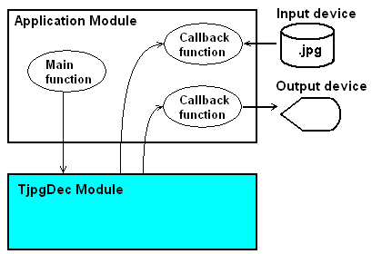

First of all, you should build and run the sample program shown below. This is a typical usage of TJpgDec module and it helps to narrow down the problem on debugging.
The decompression session is divided in two stages. The first stage is to analyze the JPEG image and the second stage is to decompress it.

/*------------------------------------------------*/ /* TJpgDec Quick Evaluation Program for PCs */ /*------------------------------------------------*/ #include <stdio.h> #include <string.h> #include "tjpgd.h" /* Bytes per pixel of image output */ #define N_BPP (3 - JD_FORMAT) /* Session identifier for input/output functions (name, members and usage are as user defined) */ typedef struct { FILE *fp; /* Input stream */ uint8_t *fbuf; /* Output frame buffer */ unsigned int wfbuf; /* Width of the frame buffer [pix] */ } IODEV; /*------------------------------*/ /* User defined input funciton */ /*------------------------------*/ size_t in_func ( /* Returns number of bytes read (zero on error) */ JDEC* jd, /* Decompression object */ uint8_t* buff, /* Pointer to the read buffer (null to remove data) */ size_t nbyte /* Number of bytes to read/remove */ ) { IODEV *dev = (IODEV*)jd->device; /* Session identifier (5th argument of jd_prepare function) */ if (buff) { /* Raad data from imput stream */ return fread(buff, 1, nbyte, dev->fp); } else { /* Remove data from input stream */ return fseek(dev->fp, nbyte, SEEK_CUR) ? 0 : nbyte; } } /*------------------------------*/ /* User defined output funciton */ /*------------------------------*/ int out_func ( /* Returns 1 to continue, 0 to abort */ JDEC* jd, /* Decompression object */ void* bitmap, /* Bitmap data to be output */ JRECT* rect /* Rectangular region of output image */ ) { IODEV *dev = (IODEV*)jd->device; /* Session identifier (5th argument of jd_prepare function) */ uint8_t *src, *dst; uint16_t y, bws; unsigned int bwd; /* Progress indicator */ if (rect->left == 0) { printf("\r%lu%%", (rect->top << jd->scale) * 100UL / jd->height); } /* Copy the output image rectangle to the frame buffer */ src = (uint8_t*)bitmap; /* Output bitmap */ dst = dev->fbuf + N_BPP * (rect->top * dev->wfbuf + rect->left); /* Left-top of rectangle in the frame buffer */ bws = N_BPP * (rect->right - rect->left + 1); /* Width of the rectangle [byte] */ bwd = N_BPP * dev->wfbuf; /* Width of the frame buffer [byte] */ for (y = rect->top; y <= rect->bottom; y++) { memcpy(dst, src, bws); /* Copy a line */ src += bws; dst += bwd; /* Next line */ } return 1; /* Continue to decompress */ } /*------------------------------*/ /* Program Main */ /*------------------------------*/ int main (int argc, char* argv[]) { JRESULT res; /* Result code of TJpgDec API */ JDEC jdec; /* Decompression object */ void *work; /* Pointer to the work area */ size_t sz_work = 3500; /* Size of work area */ IODEV devid; /* Session identifier */ /* Initialize input stream */ if (argc < 2) return -1; devid.fp = fopen(argv[1], "rb"); if (!devid.fp) return -1; /* Prepare to decompress */ work = (void*)malloc(sz_work); res = jd_prepare(&jdec, in_func, work, sz_work, &devid); if (res == JDR_OK) { /* It is ready to dcompress and image info is available here */ printf("Image size is %u x %u.\n%u bytes of work ares is used.\n", jdec.width, jdec.height, sz_work - jdec.sz_pool); /* Initialize output device */ devid.fbuf = (uint8_t*)malloc(N_BPP * jdec.width * jdec.height); /* Create frame buffer for output image */ devid.wfbuf = jdec.width; res = jd_decomp(&jdec, out_func, 0); /* Start to decompress with 1/1 scaling */ if (res == JDR_OK) { /* Decompression succeeded. You have the decompressed image in the frame buffer here. */ printf("\rDecompression succeeded.\n"); } else { printf("jd_decomp() failed (rc=%d)\n", res); } free(devid.fbuf); /* Discard frame buffer */ } else { printf("jd_prepare() failed (rc=%d)\n", res); } free(work); /* Discard work area */ fclose(devid.fp); /* Close the JPEG file */ return res; }
These are the memory usage of some platforms at default configuration. Each compilations are optimized in code size.
| AVR | PIC24 | CM0 | IA-32 | |
|---|---|---|---|---|
| Compiler | GCC | C30 | GCC | MSC |
| text+const | 6.1k | 5.1k | 3.1k | 3.7k |
TJpgDec requires a work area upto 3100 bytes for most JPEG images. It exactly depends on what parameter has been used to create the JPEG image to be decompressed. The 3100 bytes is the maximum memory requirement in default configuration and it varies depends on JD_SZBUF and JD_FASTDECODE.
TJpgDec has some configuration options on output format, performance and memory usage. These options are in tjpgdcnf.h.
This is a copy of the TJpgDec license document that included in the source codes.
/*----------------------------------------------------------------------------/ / TJpgDec - Tiny JPEG Decompressor R0.xx (C)ChaN, 20xx /-----------------------------------------------------------------------------/ / The TJpgDec is a generic JPEG decompressor module for tiny embedded systems. / This is a free software that opened for education, research and commercial / developments under license policy of following terms. / / Copyright (C) 20xx, ChaN, all right reserved. / / * The TJpgDec module is a free software and there is NO WARRANTY. / * No restriction on use. You can use, modify and redistribute it for / personal, non-profit or commercial products UNDER YOUR RESPONSIBILITY. / * Redistributions of source code must retain the above copyright notice. / /----------------------------------------------------------------------------*/
Therefore TJpgDec license is one of the BSD-style license but there is a significant difference. Because TJpgDec is for embedded projects, so that the conditions for redistributions in binary form, such as embedded code, hex file and binary library, are not specified in order to maximize its usability. The documentation of the distributions may or may not include about TJpgDec and its license document. Of course TJpgDec is compatible with the projects under GNU GPL. When redistribute TJpgDec with any modification, the license can also be changed to GNU GPL or any BSD-style license.